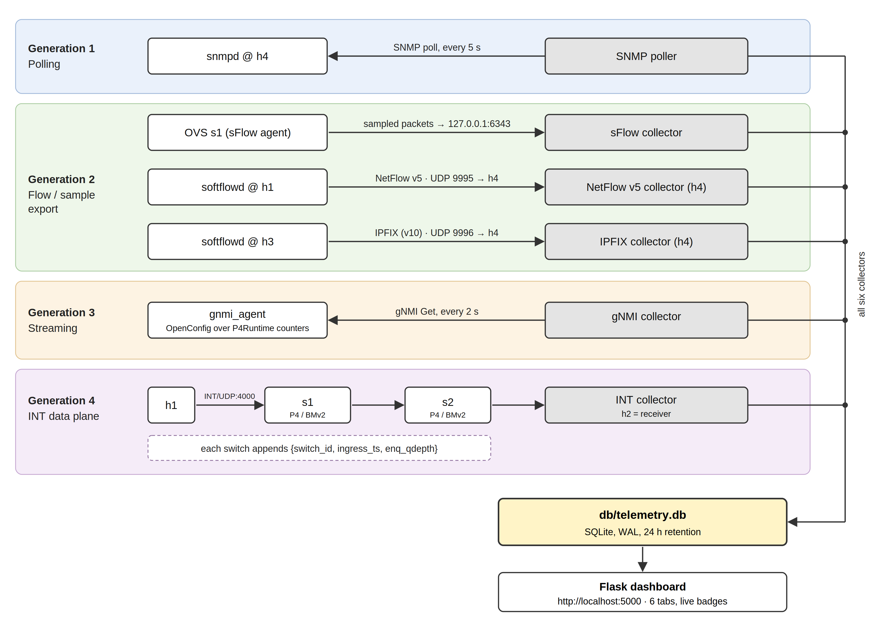
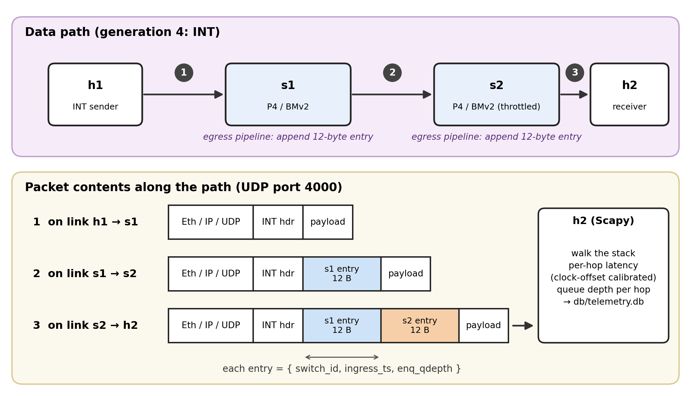
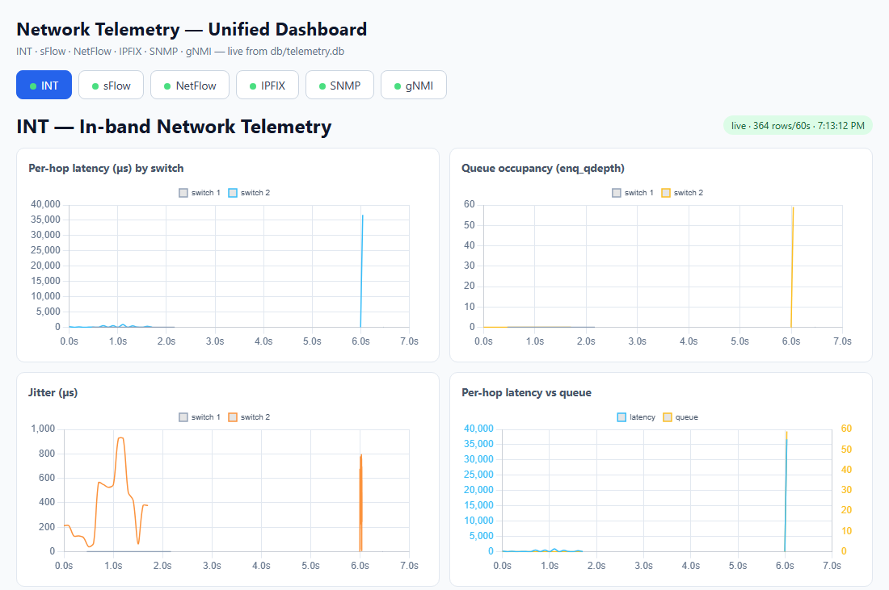
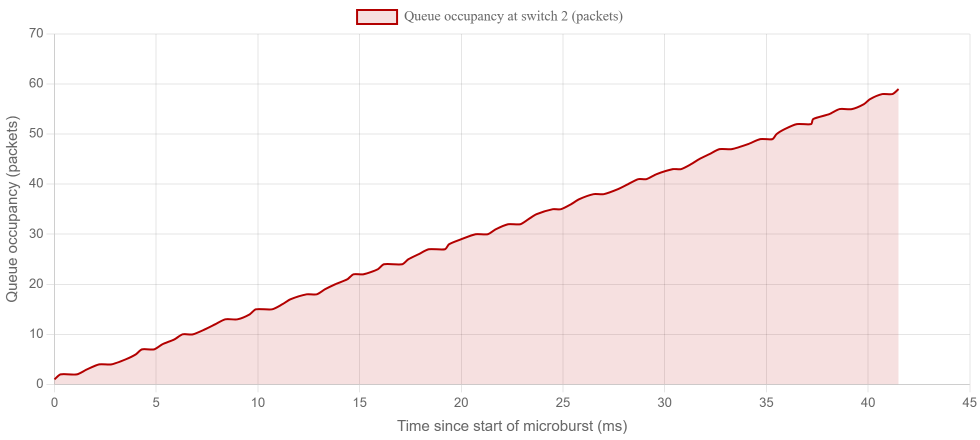
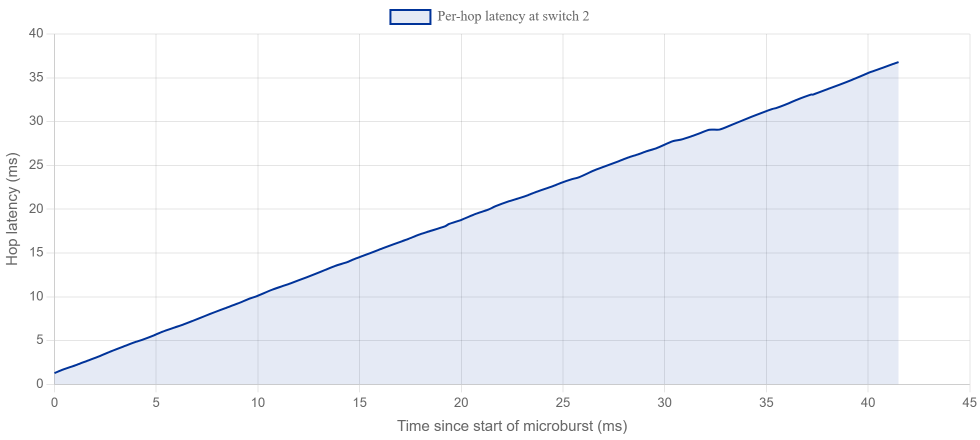

Anurag (Roll 2501560023) and the ZiggyZag Team
Under the supervision of Mr. Amit Kumar Singh
Department of Computer Science and Engineering, School of Engineering and Technology
K.R. Mangalam University, Gurugram, India
Network telemetry — the automated collection and export of measurement data from network devices — underpins fault diagnosis, capacity planning, and traffic engineering, yet operators rarely get to see the four generations of telemetry technology side by side on the same traffic. Polling protocols such as SNMP report coarse counters every few seconds and are structurally blind to sub-second events; flow-based exporters sacrifice per-packet detail; streaming interfaces and in-band telemetry promise per-packet visibility but are usually studied in isolation, each with its own collector and dashboard. This paper presents a complete, reproducible telemetry testbed built on a single emulated network (Mininet [9] with P4/BMv2 programmable switches and Open vSwitch) that exports all four generations of telemetry simultaneously (six protocols in total): SNMP (generation 1), NetFlow v5, sFlow and IPFIX (generation 2), gNMI (generation 3), and In-band Network Telemetry (generation 4, INT). Six independent Python collectors parse the protocols into one shared SQLite database, and a Flask dashboard visualises every source in real time. We evaluate the testbed with two experiments. In a controlled microburst, the INT path records the egress queue of a switch growing from 0 to 59 packets in 41.5 ms, with a peak per-hop queueing delay of 36.8 ms — an event with a 0.8% chance of being caught by any single 5-second SNMP poll. In a full end-to-end run, all six protocols deliver data concurrently (364 INT hop records, 385,285 sFlow samples, 6 NetFlow records, 11 IPFIX records, 10 SNMP polls, and 180 gNMI leaves). The testbed makes the trade-offs between telemetry generations measurable rather than asserted, and is fully scripted for one-command reproduction on a laptop.
Keywords: Network telemetry, SNMP, NetFlow, sFlow, IPFIX, gNMI, In-band Network Telemetry, P4, Mininet, programmable data planes
Modern networks are governed by data that they themselves produce: interface counters, flow records, streaming state updates and per-packet metadata. This discipline, called network telemetry, decides whether an operator learns that a link is congested minutes later, seconds later, or at the microsecond resolution at which the congestion occurred. The consequences are practical. A short burst of traffic — a microburst — can fill a switch queue and drop packets within tens of microseconds while every aggregate counter still appears healthy [11]. Data-centre operators therefore need visibility that is both fine-grained and continuous, yet the tool most of them still run, the Simple Network Management Protocol (SNMP) [1], polls devices every 5–300 seconds.
Four generations of telemetry have been developed in response. Generation one is pull-based request/response management (SNMP, 1990s). Generation two replaces raw counters with exported records: flow summaries (NetFlow [4], IPFIX [2]) and sampled packet headers (sFlow [3]). Generation three streams model-driven state over persistent connections (gNMI over gRPC with OpenConfig YANG models [5]). Generation four, In-band Network Telemetry (INT) [6], enables switches to stamp metadata directly into the packets they forward, so the receiver reconstructs the exact path, latency and queue occupancy each packet experienced.
Each generation is typically studied with its own lab, its own collector and its own user interface. This fragmentation has three consequences. First, the qualitative claim that "polling cannot see microbursts" is rarely demonstrated with a side-by-side, reproducible experiment on the same traffic. Second, comparing the generations against each other requires assembling several unrelated toolchains. Third, per-hop information — knowing which switch on a path caused a delay — exists only in generation four and is seldom integrated with the other five protocols.
This paper builds a single emulated network that closes that gap. Our contributions are:
(i) A unified testbed that exports six telemetry protocols — SNMP, NetFlow v5, sFlow, IPFIX, gNMI, and INT — from one Mininet [9] topology containing P4/BMv2 programmable switches and Open vSwitch, covering all four generations of the technology.
(ii) A P4-16 INT data plane that appends a 12-byte per-hop metadata entry (switch identifier, ingress timestamp, egress queue depth) to every packet in the egress pipeline, with zero additional monitoring traffic, plus a clock-offset calibration that makes latencies comparable across unsynchronised software switches.
(iii) Six independent collectors that parse the protocols into one shared SQLite database (WAL mode, 24-hour retention), each with a self-test mode, feeding one real-time dashboard with a tab per protocol and liveness badges.
(iv) A quantitative microburst experiment: the INT receiver observed queue occupancy rising from 0 to 59 packets over 41.5 ms with a peak queueing delay of 36.8 ms, while a 5-second SNMP poller had only a 0.8% probability of sampling any instant inside that window — the blind spot of polling measured rather than asserted.
The remainder of the paper is organised as follows. Section 2 reviews the four telemetry generations and the measurement literature that motivates them. Section 3 describes the testbed design. Section 4 evaluates it with the microburst and end-to-end experiments. Section 5 discusses limitations, and Section 6 concludes.
Pull-based management (generation 1). SNMP [1] defines a manager/agent request-response model over UDP in which management information bases (MIBs) expose counters as object identifiers. It remains the most widely deployed management protocol precisely because it is simple and stateless. Its granularity, however, is bounded by the polling interval: counters are cumulative, so two polls five seconds apart reveal only the average rate over those five seconds. Anything that starts and finishes between two polls leaves no trace.
Flow and sample export (generation 2). Rather than polling counters, devices push records. NetFlow v5 [4] summarises packets into flows (5-tuple, byte and packet counts, and first/last timestamps) and exports them on flow termination or timeout. IPFIX [2] is the IETF standardisation of the same idea with a template mechanism that makes records self-describing and extensible. sFlow [3] instead exports statistically sampled packet headers plus interface counter polls as datagrams, giving continuous coverage of very high link speeds at the cost of statistical — not exhaustive — observation. All three report aggregate views: they can say which hosts talk to each other, but not what happened inside a particular switch queue to a particular packet.
Streaming, model-driven state (generation 3). gNMI [5] replaces polling with subscriptions over gRPC, negotiates a schema through a capabilities exchange, and carries state modelled by vendor-neutral OpenConfig YANG trees. Updates are event-driven and sub-second, and the data model removes the OID bookkeeping that made SNMP fragile. The protocol itself is transport-agnostic about what it reports, so visibility still depends on which leaves a device chooses to expose.
In-band telemetry (generation 4). INT [6] inverts the model: instead of exporting data out of band, each switch appends its own state to the packet it is already forwarding. The original proposal by Kim et al. [8] showed that programmable data planes can answer per-hop questions — which path did this packet take, how long did it queue at each hop — with no extra monitoring traffic. The receiver, not the switch, does the aggregation, so the data plane cost is a fixed header extension. PINT [12] later bounded the per-packet information content to make INT practical at scale.
The empirical case against coarse polling comes from data-centre measurement. Zhang et al. [11] sampled rack-level counters at 25-microsecond resolution and found that congestion events lasting far less than a millisecond were common, while production SNMP collection ran at four-minute granularity with essentially no correlation between average utilisation and packet drops. Benson et al. [14] reached a similar conclusion from SNMP logs across 19 data centres: an overwhelming fraction of loss events occurred in microbursts shorter than the polling interval. These studies establish the problem at scale; what they do not provide is a small, reproducible environment in which the same burst is simultaneously observed by a polling protocol, by flow and sample exporters and by an in-band telemetry receiver, so the generations can be compared directly. That is the niche this testbed fills.
INT is only feasible due to two enabling systems. P4 [7] is a high-level language for programming protocol-independent packet processors, compiled by p4c to a target-specific representation; the BMv2 software switch [13] executes the compiled program and exposes a P4Runtime interface for control. Mininet [9] creates realistic virtual networks — hosts, switches and links backed by Linux kernel networking — on a single machine, and has become the standard vehicle for SDN and programmable-data-plane experiments. Surveys of in-band telemetry [10] list INT, IOAM and related schemes as the active research frontier, but typically assume hardware or large testbeds. Our contribution is a laptop-scale integration of all six protocols, with the collectors, storage and visualisation included, so that the generational comparison is a single script rather than a semester of assembly.
The entire testbed runs inside WSL2 (Ubuntu) on a Windows 11 laptop. Mininet 2.3.0 creates four hosts and two P4 switches; the P4 programs are compiled with p4c 1.2.5.15 and executed by BMv2 1.15.4 with the Protocol-Independent (PI) library and P4Runtime enabled. Open vSwitch 3.7.1 acts both as a topology element and as the sFlow exporter. Figure 1 shows the architecture: every path terminates in the same SQLite file, which is the design decision that makes cross-protocol comparison possible.

Fig. 1. Testbed architecture. All six telemetry protocols are produced by one emulated network and land in one shared database, which serves a single dashboard.
The P4 program p4/int.p4 is a P4-16 v1model program. A sender on h1 emits UDP packets to port 4000 carrying an INT header; in the egress pipeline of each switch the program appends a 12-byte stack entry containing the switch identifier, the ingress timestamp, and the egress queue depth (queue depth is only readable at egress, so metadata insertion was deliberately placed there). The receiver on h2 captures the packets with Scapy, walks the metadata stack, and computes per-hop latency. Because BMv2 switches keep independent, unsynchronised clocks, the receiver calibrates each switch with a boot offset, so reported latencies are relative but consistent within a switch. Figure 2 illustrates the concept. The demonstration topology throttles the egress queue of s2 (set_queue_rate 500), so a back-to-back burst builds a measurable queue.

Every protocol has an independent Python collector, written so that it can be tested without Mininet (--selftest mode synthesises packets and verifies parsing and database writes; seven self-tests cover the six collectors and the database helper). Table 1 summarises the six pipelines. All of them insert rows through a shared helper into db/telemetry.db, a SQLite database in WAL mode with a 24-hour row-retention policy that keeps long-running demos bounded.
| Protocol (generation) | Exporter / agent | Transport | Collector | Rate / interval |
|---|---|---|---|---|
| INT (gen 4) | P4 switches s1, s2 | UDP/4000, per-packet metadata | scapy sniffer on h2 | every packet |
| sFlow (gen 2) | Open vSwitch s1 (sampling=1, header=128) | UDP/6343 datagrams | tools/sflow_collector.py | sampled packets + 10-s counter polls |
| NetFlow v5 (gen 2) | softflowd on h1 | UDP/9995 | tools/netflow_collector.py | on flow end / cache timeout |
| IPFIX (gen 2) | softflowd on h3 (v10 templates) | UDP/9996 | tools/ipfix_collector.py | on template-driven flow records |
| SNMP (gen 1) | snmpd on h4 (SNMPv2c) | UDP, manager-side polling | tools/snmp_poller.py (pysnmp) | 5-s poll |
| gNMI (gen 3) | emulated agent over P4Runtime port counters | gRPC | pygnmi Get client | 2-s Get |
Table 1. The six telemetry pipelines of the testbed.
dashboard/app.py (Flask) serves one page with six tabs and two JSON endpoints: /api/<source> returns the most recent 200 rows of a table, and /api/status reports liveness — a source is marked live when a row has arrived within the last 60 seconds. The front end uses Chart.js, refreshes every 5 seconds, and shows a green/red badge per protocol (Figure 3). The dashboard is reachable from the Windows host browser at localhost:5000 while the collectors run in WSL.

All experiments ran on one machine (Windows 11, WSL2 Ubuntu) with the versions listed in Section 3. run_all.sh starts the topology, executes the INT demonstration, brings up the OVS/softflowd exporters, starts the SNMP poller and gNMI client, launches the dashboard, and asserts that every one of the six tables is non-empty. Traffic for the microburst experiment consists of 1,000 UDP packets transmitted back-to-back in well under a second towards the throttled egress of s2. We report two experiments: the controlled microburst (Section 4.2) and the full end-to-end run (Section 4.3).
Figure 4 plots the egress queue occupancy of switch s2 recorded by INT, time-aligned to the first sample of the burst. The queue starts empty, rises monotonically through 80 recorded samples over 41.5 ms, and peaks at 59 packets; the throttled link then drains the queue as the remaining packets are dropped — in the reference run only about 80 of the 1,000 packets were delivered. Figure 5 shows the per-hop latency measured for the same packets: queueing delay climbs to a peak of 36.8 ms, closely tracking the queue occupancy, and collapses as the queue drains.


Now place this event next to generation-1 polling. SNMP reports cumulative counters, so an event is observable only if a poll lands inside its duration. The burst lasted 41.5 ms; with a 5-second poll interval, the probability that any single poll samples an instant inside the window is 41.5 ms / 5 s ≈ 0.8%, and even a lucky poll would report only the end state of the queue, not its growth from 0 to 59. In our runs the SNMP poller's nearest observations were tens of seconds away from the burst. The experiment thus quantifies, in a controlled setting, the measurement gap that Zhang et al. [11] documented in production: short-lived congestion is invisible to polling by construction, and no amount of counter polling can recover it after the fact.
The same burst was simultaneously visible to the other five protocols, but each of them distorted it differently, which is precisely the comparison the testbed exists to enable. sFlow exported sampled headers (sampling rate 1, 128-byte headers) that show the packets existed but not their queueing delay. NetFlow v5 and IPFIX exported a flow record summarising the burst as a single entry with byte and packet counts — excellent for accounting, silent about the internal queue. gNMI, polling interface counters every 2 seconds, captured the cumulative effect of the burst on interface octets but none of its internal structure. Only INT recorded where the delay happened, at which hop, and how the queue evolved.
The second experiment runs the complete stack for a full cycle and asserts that every table receives live data. Table 2 reports the row counts of one representative run; the dashboard simultaneously showed all six badges green. Row counts differ by orders of magnitude because the protocols deliberately observe at different rates: sFlow sampled continuously, INT logged every packet hop, gNMI and SNMP polled on their schedules, and the flow exporters wrote one record per completed flow. The 364 INT rows correspond to 182 delivered packets crossing two hops — the 100 packets of the demonstration's background flow (10 pps for 10 s) plus the 82 burst packets that survived the throttled queue — so no individual packet is counted more than once per hop.
| Table | Protocol | Rows in the run | What one row means |
|---|---|---|---|
| int_hops | INT | 364 | one hop of one packet (switch ID, latency, jitter, queue occupancy) |
| sflow_samples | sFlow | 385,285 | one sampled packet header with interface counters |
| netflow_flows | NetFlow v5 | 6 | one completed flow record (5-tuple, bytes, packets) |
| ipfix_flows | IPFIX | 11 | one IPFIX data record decoded from dynamic templates |
| snmp_stats | SNMP | 10 | one 5-second poll (CPU, memory, interface octets) |
| gnmi_stats | gNMI | 180 | one OpenConfig leaf value from a 2-second Get |
Table 2. End-to-end run: all six tables non-empty, single command (run_all.sh), single database.
Table 3 summarises the testbed's central observation: the six protocols are not competing implementations of the same measurement; they answer different questions, and the differences become visible only when they run on the same traffic. Generations 1 and 2 remain the right tools for inventory, accounting, and trend analysis because their overhead is negligible and their semantics are simple. Generation 3 removes the polling interval for anything a device is willing to stream. Generation 4 is the only one that attributes an event to a specific hop and resolves transients, at the cost of a programmable data plane and per-packet header space. The practical guidance our results support is compositional: run a polling protocol for inventory, a flow or sampling protocol for attribution, and in-band telemetry for latency and queue forensics — and unify their storage so the views can be correlated in time.
| Dimension | SNMP | NetFlow v5 / IPFIX | sFlow | gNMI | INT (ours) |
|---|---|---|---|---|---|
| Generation | 1 (pull) | 2 (push, records) | 2 (push, samples) | 3 (streaming) | 4 (in-band) |
| Observation unit | interface counters | flow (aggregate) | sampled packet header | modelled leaf | per-hop per-packet metadata |
| Typical interval | 5 s (here) | flow end / timeout | continuous sampling | 2 s Get (here) | every packet |
| Per-hop visibility | no | no | no | no | yes |
| Detects the 41.5 ms burst? | highly unlikely | as one aggregate record | only sampled packets | cumulative counters | packet by packet, queue growth |
| Extra traffic | polls | record export | datagram export | subscriptions/gets | zero (in-band metadata) |
| Experimental implementation | pysnmp + snmpd | softflowd + Python parsers | OVS + Python parser | pygnmi + emulated agent | P4/BMv2 + scapy receiver |
Table 3. The six protocols compared on the same traffic and timeline.
Emulation, not hardware. BMv2 is a software switch: its queue rates, latencies and drops are modelled rather than realised in ASIC buffers. The absolute numbers (59 packets, 36.8 ms) should be read as a faithful reproduction of the mechanism, not as the behaviour of a production switch; a hardware P4 target would exhibit the same qualitative blind spot with different constants.
Clock synchronisation. BMv2 instances keep independent clocks. Our receiver compensates with a boot-offset calibration, which makes latencies within one switch consistent, but cross-switch comparisons remain relative. A hardware deployment would use PTP or timestamp the ingress and egress on the same clock.
The gNMI agent is emulated. Rather than a vendor device, we expose P4Runtime port counters through a gNMI-shaped service. This makes generation 3 available in the same lab, but the leaf set is smaller than a real router's OpenConfig tree, and the two reported bugs in the run log (a blank first dashboard load and a per-interface gNMI chart that cannot draw) are user-interface issues rather than telemetry-path issues.
Sampling versus completeness. sFlow at sampling rate 1 in our configuration approaches full capture, but production rates (1 in 100–10,000) trade coverage for overhead; flow records have the complementary weakness of collapsing distinct events into one row. Neither can reconstruct queue dynamics; the microburst figures exist only because INT recorded them.
Pipeline latency in the flow path. The NetFlow/IPFIX exporters are fed through a tcpdump-to-FIFO-to-softflowd chain, which introduces 10–60 seconds of export delay. This affects timeliness of flow records only, not their content, and is documented in the project run log.
Scale. The topology is two switches and four hosts on one machine. Collector throughput (385,285 sFlow samples in one run) was not stress-tested against line rate; the shared SQLite database is appropriate for a testbed, not for a data centre. Time-series storage and multi-writer ingestion are natural next steps.
We built and evaluated a single emulated network that produces all four generations of telemetry simultaneously — SNMP (gen 1); NetFlow v5, sFlow and IPFIX (gen 2); gNMI (gen 3); INT (gen 4) — into one shared database with one dashboard, and used it to measure rather than assert the differences between them. The microburst experiment showed an egress queue growing from 0 to 59 packets in 41.5 ms with 36.8 ms of queueing delay, an event a 5-second poller has a 0.8% chance of catching and could never reconstruct; the end-to-end experiment showed all six protocols delivering data concurrently from a single command. The testbed is fully scripted and self-tested, making it a reusable teaching and research platform for telemetry comparisons. Future work includes running the INT data plane on hardware, extending the gNMI agent with a fuller OpenConfig tree, adding threshold-based alerting on the unified database, and evaluating collector and storage scalability beyond a single host.
Manuscript prepared October 2026. Source, code and reproduction scripts: project repository of the ZiggyZag team, K.R. Mangalam University.